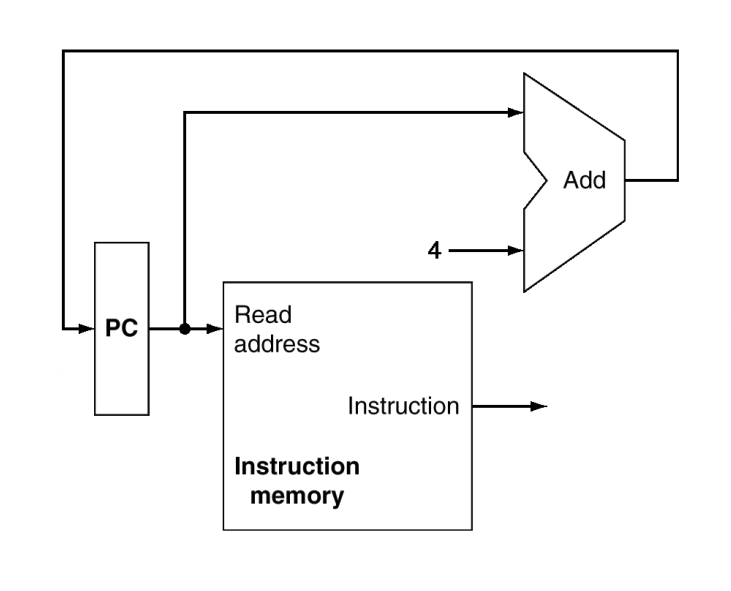
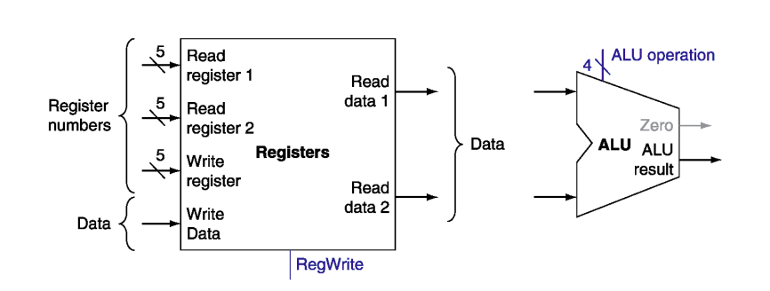
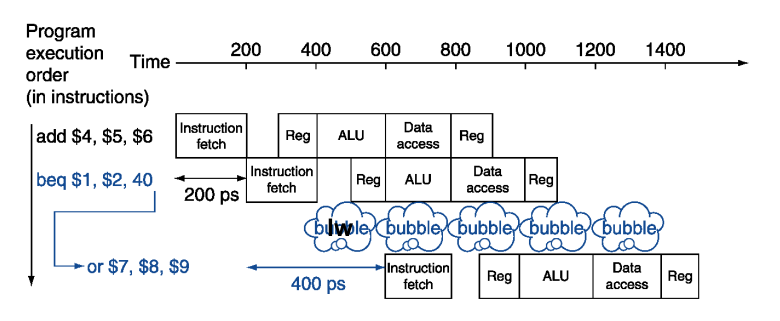
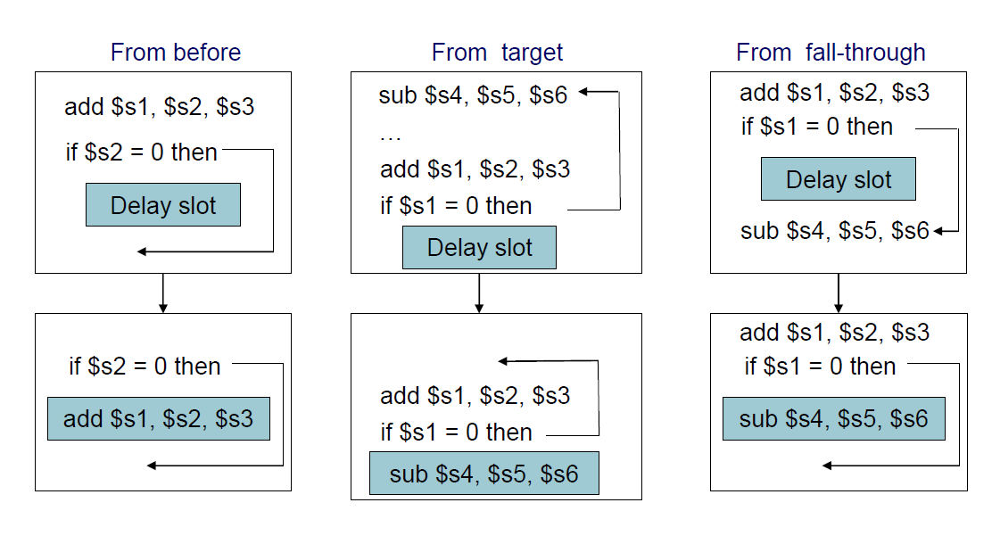

The Processor
CPU Overview
因為不能把很多線接在一起，所以需要 MUX，還需要有 Control Unit 來控制 MUX：

Instruction Fetch

- PC: 32-bits register
- 每次執行完指令後將 PC + 4 (1 個 instruction 4 bytes)
Instructions Datapath
R-Format
| 6bits | 5bits | 5bits | 5bits | 5bits | 6bits |
|---|---|---|---|---|---|
| op | rs | rt | rd | shamt | funct |

- 讀 2 個 input: Read Register 1, 2
- 進 ALU 做運算
- 把算出來的結果存到 Write Register
I-Format
| 6bits | 5bits | 5bits | 16bits |
|---|---|---|---|
| op | rs | rt | immediate |
Load/Store
- Sign-extend (以 ALU 實做) 用作將 Address 做 16-bits 的 offset (I-type 的後 16-bits 要轉成 32-bits)
- Load: 讀 Memory 的資料然後更新 Register
- Store: 將 Register 的資料寫到 Memory
Branch

- 讀 2 個 Register
- 比較兩個 Register (用 ALU 的 Substract 還有 Check Zero output)
- 算 Target Address
- Sign-extended
- 左 shift 2-bits (因為一個 word 4-bits)
- 加上 PC + 4
J-Format
| 6bits | 26bits |
|---|---|
| op | target address |
- 舊 PC 的前 4-bits
- 26-bits jump address
- 00
組合在一起

Control Unit
ALU Control
| ALU control | Function |
|---|---|
| 0000 | AND |
| 0001 | OR |
| 0010 | add |
| 0110 | subtract |
| 0111 | set-on-less-than |
| 1100 | NOR |
分析一下 Instruction 需要 ALU 做什麼事：
- 分 4 類
- Load/Store: add
- Branch: substract
- R-type: depend on funct-field
- 讀到 10 要再讀 funct field (由 second level 產生出 ALU signal)
| opcode | ALUOp | Operation | funct | ALU function | ALU control |
|---|---|---|---|---|---|
| lw | 00 | load word | XXXXXX | add | 0010 |
| sw | 00 | store word | XXXXXX | add | 0010 |
| beq | 01 | branch equal | XXXXXX | subtract | 0110 |
| R-type | 10 | add | 100000 | add | 0010 |
| subtract | 100010 | subtract | 0110 | ||
| AND | 100100 | AND | 0000 | ||
| OR | 100101 | OR | 0001 | ||
| set-on-less-than | 101010 | set-on-less-than | 0111 |
- 25:21: always read
- 20:16: 除了 load 都為 read
- R-type 的 rd, Load 的 rt: write
- address: sign-extended, add
| Instruction | 31:26 | 25:21 | 20:16 | 15:11 | 10:6 | 5:0 |
|---|---|---|---|---|---|---|
| R-type | 0 | rs | rt | rd | shamt | funct |
| Load/Store | 35/43 | rs | rt | address | ||
| Branch | 4 | rs | rt | address |
R-type

Load
Branch-on-Equal

Jump
Control Unit Settings
| Instruction | RegDst | ALUSrc | MemToReg | RegWrite | MemRead | MemWrite | Branch | ALUOp1 | ALUOp0 |
|---|---|---|---|---|---|---|---|---|---|
| R-format | 1 | 0 | 0 | 1 | 0 | 0 | 0 | 1 | 0 |
| lw | 0 | 1 | 1 | 1 | 1 | 0 | 0 | 0 | 0 |
| sw | x | 1 | x | 0 | 0 | 1 | 0 | 0 | 0 |
| beq | x | 0 | x | 0 | 0 | 0 | 1 | 0 | 1 |
First-Level Control
把 Input 的 op 和 Output 的 Control Signal 找出關係：
| Input or output | Signal name | R-format | lw | sw | beq |
|---|---|---|---|---|---|
| Inputs | Op5 | 0 | 1 | 1 | 0 |
| Op4 | 0 | 0 | 0 | 0 | |
| Op3 | 0 | 0 | 1 | 0 | |
| Op2 | 0 | 0 | 0 | 1 | |
| Op1 | 0 | 1 | 1 | 0 | |
| Op0 | 0 | 1 | 1 | 0 | |
| Outputs | RegDst | 1 | 0 | X | X |
| ALUSrc | 0 | 1 | 1 | 0 | |
| MemtoReg | 0 | 1 | X | X | |
| RegWrite | 1 | 1 | 0 | 0 | |
| MemRead | 0 | 1 | 0 | 0 | |
| MemWrite | 0 | 0 | 1 | 0 | |
| Branch | 0 | 0 | 0 | 1 | |
| ALUOp1 | 1 | 0 | 0 | 0 | |
| ALUOp2 | 0 | 0 | 0 | 1 |
Second-Level Control
將 ALU Control 的表格：
| opcode | ALUOp | Operation | funct | ALU function | ALU control |
|---|---|---|---|---|---|
| lw | 00 | load word | XXXXXX | add | 0010 |
| sw | 00 | store word | XXXXXX | add | 0010 |
| beq | 01 | branch equal | XXXXXX | subtract | 0110 |
| R-type | 10 | add | 100000 | add | 0010 |
| subtract | 100010 | subtract | 0110 | ||
| AND | 100100 | AND | 0000 | ||
| OR | 100101 | OR | 0001 | ||
| set-on-less-than | 101010 | set-on-less-than | 0111 |
整理一下：
| ALUOp1 | ALUOp0 | F5 | F4 | F3 | F2 | F1 | F0 | ALU control | Operation |
|---|---|---|---|---|---|---|---|---|---|
| 0 | 0 | X | X | X | X | X | X | 0010 | lw/sw |
| X | 1 | X | X | X | X | X | X | 0110 | beq |
| 1 | X | X | X | 0 | 0 | 0 | 0 | 0010 | add |
| 1 | X | X | X | 0 | 0 | 1 | 0 | 0110 | sub |
| 1 | X | X | X | 0 | 1 | 0 | 0 | 0000 | AND |
| 1 | X | X | X | 0 | 1 | 0 | 1 | 0001 | OR |
| 1 | X | X | X | 1 | 0 | 1 | 0 | 0111 | slt |
分析 ALU Control 各 bit 的算式，可以發現有些地方結合後其實就是 Don’t care：
| ALUOp1 | ALUOp0 | F5 | F4 | F3 | F2 | F1 | F0 | ALU control |
|---|---|---|---|---|---|---|---|---|
| X | 1 | X | X | X | X | X | X | 0110 |
| 1 | X | X | X | 0 | 0 | 1 | 0 | 0110 |
| 1 | X | X | X | 1 | 0 | 1 | 0 | 0111 |
| ALUOp1 | ALUOp0 | F5 | F4 | F3 | F2 | F1 | F0 | ALU control |
|---|---|---|---|---|---|---|---|---|
| 0 | 0 | X | X | X | X | X | X | 0010 |
| X | 1 | X | X | X | X | X | X | 0110 |
| 1 | X | X | X | 0 | 0 | 0 | 0 | 0010 |
| 1 | X | X | X | 0 | 0 | 1 | 0 | 0110 |
| 1 | X | X | X | 1 | 0 | 1 | 0 | 0111 |
| ALUOp1 | ALUOp0 | F5 | F4 | F3 | F2 | F1 | F0 | ALU control |
|---|---|---|---|---|---|---|---|---|
| 1 | X | X | X | 0 | 1 | 0 | 1 | 0001 |
| 1 | X | X | X | 1 | 0 | 1 | 0 | 0111 |

Performance
- Critical path: load instruction
- Instruction memory register file ALU data memory register file
- Violates design principle: Making the common case fast
Pipeline
Parallelism improves performance.
MIPS Pipeline
5個 stage 同時執行不同指令
- IF: Instruction fetch from memory
- ID: Instruction decode & register read
- EX: Execute operation or calculate address
- MEM: Access memory operand
- WB: Write result back to register
最理想: 一個 cycle 執行完一個指令
MIPS ISA designed for pipelining:
- 所有 instruction 都為 32-bits
- 較容易在一個 cycle 中做 fetch 及 decode
- c.f. x86: 1- to 17-byte instructions
- Instruction formats 少
- 較容易在一個 step 中做 decode 及 read registers
- Load/store addressing
- calculate address in stage
- access memory in stage
- Alignment of memory operands
- Memory access 只需要 1 個 cycle
Performance
若所有 stage 都花費同樣時間，則
能 speed up 的原因是因為 throughput 上升，latency (time for each instruction) 不變
Hazards
- Structure hazards: 硬體架構，大家都要用但只有一份resouse，要用就要排隊
- Data hazard: 前一個指令算完時還讀不到 (前一個指令第5個stage才存，但我第2個stage就要)
- Control hazard: 下一個clock cycle不知道要執行甚麼指令
Summary
- pipeline 增加 throughput
- 一個時間點每個 stage 執行不同指令
- 每個 instruction 有相同的 latency
- performance 被 hazard 限制
- ISA 影響 pipeline 實做的複雜度
Pipeline Datapath
同一條線要怎麼 keep 3 個值？加上 pipeline register！以保持指令資訊
Pipeline Register

寫入的是第 個 write register，不是第 個的 write register！
Solution: 把 write register pack 起來，帶著一起走
Pipeline Operation
- single-clock-cycle pipeline diagram: 分析一個 cycle 的 pipeline usage
- muli-cycle pipline diagram: 分析各 operation 在不同 cycle 的 resource usage
Single-Cycle diagram
pipeline 在某個 cycle 的運作情形
Multi-Cycle Diagram
showing resource usage
Pipeline Control
Q: 為甚麼不把 RegDst 搬到前面，可以少用 5-bits?
A: MUX 需要 input selection (RegDst) ，由 control unit 產生，如果放在第二個 stage RegDst 還沒產生
Control values 基本上與 Single Cycle CPU - ALU Control 沒有什麼區別
| opcode | ALUOp | Operation | funct | ALU function | ALU control |
|---|---|---|---|---|---|
| lw | 00 | load word | XXXXXX | add | 0010 |
| sw | 00 | store word | XXXXXX | add | 0010 |
| beq | 01 | branch equal | XXXXXX | subtract | 0110 |
| R-type | 10 | add | 100000 | add | 0010 |
| subtract | 100010 | subtract | 0110 | ||
| AND | 100100 | AND | 0000 | ||
| OR | 100101 | OR | 0001 | ||
| set-on-less-than | 101010 | set-on-less-than | 0111 |
Recall: Single Cycle CPU - Control Unit Settings，將不同 stage 的 control signal 整理一下：
| Stage | Instruction | R-format | lw | sw | beq |
|---|---|---|---|---|---|
| EX stage | RegDst | 1 | 0 | x | x |
| ALUOp1 | 1 | 0 | 0 | 0 | |
| ALUOp0 | 0 | 0 | 0 | 1 | |
| ALUSrc | 0 | 1 | 1 | 0 | |
| M stage | Branch | 0 | 0 | 0 | 1 |
| MemRead | 0 | 1 | 0 | 0 | |
| MemWrite | 0 | 0 | 1 | 0 | |
| WB stage | RegWrite | 1 | 1 | 0 | 0 |
| MemToReg | 0 | 1 | x | x |
用到的就可以不要了，沒用到的繼續傳下去
RegWrt 要滿足打包的原則，所以會被 pack 到 pipeline regiter
Pipeline Hazards
Data Hazards
- Solution.1 bubble(no opertation)
- panelty: 50%的使用率 (第一個指令做完 > no operation > no operation > 第二個指令執行完畢)
- Solution.2: forwarding(bypassing)
- 只要拿到值就開始算，不用等存到 reg 再讀出來
Example
sub 在 cycle 5 才將資料寫回 register，用紅線的 forwarding 解決
Forwarding Detection
將 register number 也隨 pipeline 傳遞
Data hazard 會發生在:
- EX/MEM.Reg.Rd = ID/EX.Reg.Rs
- EX/MEM.Reg.Rd = ID/EX.Reg.Rt
- MEM/WB.Reg.Rd = ID/EX.Reg.Rs
- MEM/WB.Reg.Rd = ID/EX.Reg.Rt
但只在需要寫回 Reg 時才做 forwarding:
- EX/MEM.RegWrite
- MEM/WB.RegWrite
且寫回去的值不為 0
- EX/MEM.Reg.Rd != 0
- MEM/WB.Reg.Rd != 0
- EX hazard
- if (EX/MEM.RegWrite and (EX/MEM.Reg.Rd != 0) and (EX/MEM.Reg.Rd = ID/EX.Reg.Rs)) >> ForwardA = 10
- if (EX/MEM.RegWrite and (EX/MEM.Reg.Rd != 0) and (EX/MEM.Reg.Rd = ID/EX.Reg.Rt)) >> ForwardB = 10
- MEM hazard
- if (MEM/WB.RegWrite and (MEM/WB.Reg.Rd != 0) and (MEM/WB.Reg.Rd = ID/EX.Reg.Rs)) >> ForwardA = 01
- if (MEM/WB.RegWrite and (MEM/WB.Reg.Rd != 0) and (MEM/WB.Reg.Rd = ID/EX.Reg.Rt)) >> ForwardB = 01
Double Data Hazard
使用最近算出來的，所以要修改 MEM hazard，如果 EX hazard 非 true 時才做
- MEM hazard
- if (MEM/WB.RegWrite and (MEM/WB.Reg.Rd != 0) and not (EX/MEM.RegWrite and (EX/MEM.Reg.Rd != 0) and (EX/MEM.Reg.Rd = ID/EX.Reg.Rs)) and (MEM/WB.Reg.Rd = ID/EX.Reg.Rs)) >> ForwardA = 01
- if (MEM/WB.RegWrite and (MEM/WB.Reg.Rd != 0) and not (EX/MEM.RegWrite and (EX/MEM.Reg.Rd != 0) and (EX/MEM.Reg.Rd = ID/EX.Reg.Rt)) and (MEM/WB.Reg.Rd = ID/EX.Reg.Rt)) >> ForwardB = 01
Datapath
Load-Use Data Hazard
- Load & R-type
- lw 在第四個 stage 結束後才將 data 讀出來
- EX 後是 memory address 不是 data，不能直接拉 EX 後那條
Solution: reorder code/bubble，讓 lw 與 add 間隔兩個 cycle
Example
Detection
if ID/EX.MemRead and ((ID/EX.Reg.Rt = IF/ID.Reg.Rs) or (ID/EX.Reg.Rt = IF/ID.Reg.Rt)) >> stall and insert bubble
- 將 ID/EX register 中的 Control value 設為 0
- EX, MEM, WB do nop
- PC, IF/ID register 不更新
- 下一個 cycle 做同樣的事
- CC3: detect load use hazards，IF/ID 紀錄第二個指令 (and)，PC 指到第三個指令 (or)
- 第三個指令 (or) 在 CC3 讀一次 CC4 又讀一次
- 第二個指令 (and) 在 CC3 decode 一次 CC4 又 decode 一次
Datapath
hazard detect unit
- control 在發現 hazard 時全部改為 0
- PCWrite = 0，不讓 PC + 4 寫進 PC
- IF/IDWrite = 0，不讓 instruction 寫入
Reorder code
如果 compiler 夠強，也能在 compile 時 rearrage code
Control Hazards
beq 下一個 Instruction fetch 不確定要執行甚麼指令，不知道該跳還是不要跳 (depend on branch 的結果)
Solution: 猜!
猜不要跳，猜對了

猜不要跳，lw 正要 pipeline instruction fetch (但不應該被執行)，然後發現猜錯了，於是讓 lw 後面都變成 no operation (這邊加上一些硬體的設定直接 flush 掉)，接著跳到 or 繼續執行
Detection
提早發現 branch 跳錯，可以在第 2 個 stage
- 加 target address adder
- 加 register comparision
在第 2 個 stage 結束後就可以發現 hazard
Data hazard
如果比較的兩個 register 有 data hazard，至少需要 stall 一個 cycle
如果 comparision depend 的 register 是 lw，至少需要 stall 兩個 cycle
Prediction
有兩種猜的方法：
- Static branch prediction: 每次都猜一樣的
- Dynamic branch prediction: 上次猜對還猜錯，猜對了繼續猜同樣的，猜錯了跟個性有關，有猜錯一次就換的，也猜錯多次才換的
1-Bit Predictor
猜錯就猜另一個，depend on iteration numbers
2-Bit Predictor
連續猜錯或猜對兩次才換
Delay Slot
在 branch 後執行不影像 branch 的 code

Branch Target Buffer
Cache of target addresses，當 IF 時計算跳過去的 PC，branch 時可以直接跳
Exceptions and Interrupts
exception: within CPU
interrupt: from external I/O controller
Handling Exceptions
MIPS 透過 System Control Coprocessor (CP0) 集中管理，計下發生 exception 的 PC (EPC)
Pipeline
Consider overflow on add in EX stage: add $1, $2, $1
- 取消寫入到 $1
- 把在 pipeline 的指令做完
- flush add 與接下來的 instruction
- 保存 Exception cause 與 EPC
- 傳到 handler
把 Exception cause 複寫到 cause register，包在 control 中
Example
Handler
1 | 80000180 sw $25, 1000($0) |
Multiple Exceptions
Pipeline 中出現多個 exception，若有先後順序，選最前面的 exception，flush 後面的 instructions
Imprecise Exceptions
當 exception 發生時不能找到是哪個 instruction 發生的，把大致的結果 (cause register) 交給 OS。
simple hardware, complex handler (duty located on OS)
若 multiple-issue 的 exceptions 分不清先後順序，無法適用 imprecise exceptions
Instruction-Level Parallelism
pipeline 就是其中一種 ILP
增加 ILP 的方法：
- 想辦法把 5 stage 提升到 7 stage…: 每一個 Stage 要做的事變少
- drawback: 發生 hazard 要停下來的 stage 變多 (flush 越多，做白工越多), exception 也是
- 建多條 pipeline
Multiple Issue
- Static multiple issue
- Compiler 將 instruction group 到 issue slot
- Compiler detects and avoids hazards
- Dynamic multiple issue
- CPU 讀 instruction stream 並選擇在每個 cycle 需要 issue 的 instruction
- Compiler reorder instructions
- CPU resolves hazards at run-time
Speculation
層次更高的猜，盡量執行指令
- 指令還沒執行完，做一個不應該做的事情
- 有些指令會把值寫到 reg，寫到 memory。其他都能做，就是 write 不能做 (所以電腦狀態沒變)。
- 猜錯就是多執行一些 instruction，執行完錯了就不要寫就好。盡可能能執行就執行，順序不一樣也沒關係。
- 對了繼續執行，錯了就 rollback 執行對的那個指令
Compiler Speculation: Compiler 可以 reorder code 來避免stall，或是寫一些 instruction 來修正做出錯誤的 speculation 的狀況。
Hardware Speculation: 硬體可以做 look-ahead，將 instruction 的結果和 exception 都先存在 buffer 裡，直到他們要被用到或是判斷 speculation 正確。如果判斷 speculation 錯誤就把 buffer flush 掉。
with Exceptions
1 | *ptr = 10; // exception, core dump |
- Static Speculation
- 增加用來延遲 exception 的 ISA。
- Dynamic Speculation
- buffer exception 直到 instruction 結束
Static Multiple Issue
Compiler 把多個指令兜成一個虛擬指令 > Very Long Instruction Word (VLIW)
Scheduling
- reorder instuction into issue packets
- packet 中沒有 dependency
- 必要時加入 nop
MIPS with Static Dual Issue
ALU/branch + load/store: 64-bits instruction
Datapath
Harzard
EX data hazard: 在同一個 packets 無法做 forwarding > 分成兩個 packet 執行
load-use hazard: 仍需間隔 1 個 cycle，但現在是 2 個 instructions
Example
Schedule:
1 | Loop: lw $t0, 0($s1) # $t0=array element |
Loop Unrolling
- 重複 loop body
- register renaming，避免 anti-dependencies (對相同的 register 做 sw > lw)
Example
1 | Loop: lw $t0, 0($s1) # $t0=array element |
- s1 沒有被減 > $t0
- s1 - 16 + 12 > $t1
- s1 - 16 + 8 > $t2
- s1 - 16 + 4 > $t3
t0, t1, t2, t3: register renaming
Dynamic Multiple Issue
- Superscalar processors
- 讓 processor 在執行的時候選擇多個指令在一個 cycle 中執行
- CPU 決定每個 cycle 執行的 instruction 數量
Why?
compiler 可以預測的 run-time 不能預測
Dynamic Pipeline Scheduling
允許 CPU 非順序執行 instruction，來消除 stall
1 | lw $t0, 20($s2) |
可以在 lw 與 addu 間執行 sub
reservation station: 收集每個 instruction 的 Input operands
有幾個functional unit就可以同時丟幾個指令
functional unit 有可能無法直接寫到 register，需要inorder的存進去
1 | addi s1, ... |
add 與 addi 要找順序存到 s1 >>> commit order
Register Renaming
Reservation stations and reorder buffer 提供 register renaming
Speculation
預測 branch 並繼續執行，直到 branch 結果出來才寫入
Summary
沒有想像中優化那麼多:
- Program 有其他 dependency 限制 ILP
- e.g. 兩個 pointer 指到同一個位置，看名字看不出來 (pointer aliasing)
- 有些 instruction 很難做平行化
- Memory delays
- limited bandwidth